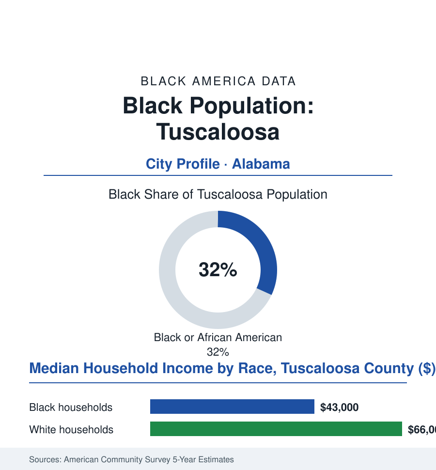

Black Cities
Black Tuscaloosa: 32,000 People in the Druid City
Tuscaloosa holds the university, the Mercedes plant's shadow, and Bloody Tuesday's courthouse steps — a Black community whose fight is inscribed in the town's own architecture.

Tuscaloosa's Black community numbers roughly 32,000 people — about 32% of the city's 100,000 residents — in the west-Alabama river town where the state's flagship university sits across a racial geography as sharply drawn as any in this atlas, and where the civil-rights era's violence has a date, a place, and finally a marker. This article reads Tuscaloosa's numbers.
Bloody Tuesday and the Two Cities
The record's center is a June morning in 1964 — Bloody Tuesday, a week before Mississippi's Freedom Summer began: Black Tuscaloosans marching from the First African Baptist Church toward the new county courthouse, whose segregated water fountains they meant to protest, met by police and deputized citizens with clubs, tear gas, and fire hoses at the church's own doors — dozens injured inside the sanctuary in the accounts the survivors gave the federal investigators, the episode standing for decades as one of the movement's least nationally remembered and most locally formative mornings. The context the courthouse embodied was the era's whole architecture: the university up the boulevard one year past the Stand in the Schoolhouse Door, its enrollment a few dozen Black students in the mid-sixties' catalogues, Autherine Lucy — the first, expelled in 1956 — a name the university would spend the next half-century formally re-embracing in the named buildings and scholarships of the present data. The community's parallel institutions in the record are West Tuscaloosa's: the churches of the Bottom, the Black business rows, the Stillman College campus — the Presbyterian-founded HBCU of 1876 whose presence makes Tuscaloosa, in the education data, a two-college town whose two colleges faced each other across the whole color line — and the industrial shelf of the tire plant and the paper and chemical works along the river, the union file's Alabama chapter written in shift rosters on both sides of the tracks.
The University's City, the Factory's County
The present century added a second date the whole city shares: the great tornado of 2011, whose path cut a mile-wide argument through the map indifferent to every line the town had drawn — the damage data showing its track through the working-class districts east and south, the recovery's rebuilding map in the permit data drawing its own argued lines, and the relief-and-rebuilding years becoming, in the civic record, the town's most united and most audited chapter since the sixties: the same streets, surveyed this time by adjusters, with the distribution questions following the old geography into the new foundations.
The modern economy runs on the two engines the datelines know: the university — the state's largest, its football economy a nine-figure seasonal industry in the economic-impact studies, its student body now roughly an eighth Black in the enrollment data (a figure whose plateau the retention file audits), its Black faculty and its named-for-Lucy buildings the present era's account rendered in architecture — and the county's industrial crown a half-hour east: the Mercedes-Benz plant, the first the company built in America, whose supplier archipelago made the region a global auto address and whose workforce, in the plant-gate demographics the trade data sketch, draws Black Tuscaloosa's commuters by the thousands. The household rows in the county survey cuts run the college town's characteristic split — a Black median in the low forty-thousands, the west side's poverty tracts beside the university district's student poverty in the maps' familiar double exposure — and the civic ledger is the era's standard work: the school's attendance zones still shadowing the old lines, the riverwalk and downtown investment of the recent bond issues, the Bloody Tuesday marker's installation in the last decade after the survivors' fifty-year wait, First African Baptist's congregation keeping the date the way this atlas's churches keep them all — in the calendar, aloud, annually, until the town's own telling catches up. The data say it is catching up the way the enrollment line moves: by the cohort, by the building renamed, by the marker finally bolted to the courthouse ground where the fountains once stood.
Reading Tuscaloosa's Numbers
Thirty-two thousand people in the Druid City: Tuscaloosa's file is the atlas's Alabama university chapter — the sanctuary's morning, the stadium's Saturdays, the assembly line's shifts, one community across all three. The census counts the residents. The church that keeps Bloody Tuesday's date counts the cost, and keeps the receipts the courthouse square now, at last, acknowledges.
More in Black Cities
Black Atlanta: Population, Distribution, and Growth of a Black Metropolis
Metro Atlanta holds more than two million Black residents — roughly one in three, second only to New York. The suburban distribution, migration history, and composition of Black Atlanta in the census data.
Black New York: The Largest Black Population in America
The New York metropolitan area holds about 3.4 million Black residents — more than any metro in the nation — and the city itself about two million. The census profile.
Black Washington: The District and the Metro
The Washington metro holds about 1.6 million Black residents, and the District itself — long a majority-Black city — now records a Black share near 41 percent. The census profile.
Source: U.S. Census Bureau, 2020 Census and American Community Survey 5-year estimates; City of Tuscaloosa and Tuscaloosa County; University of Alabama records.